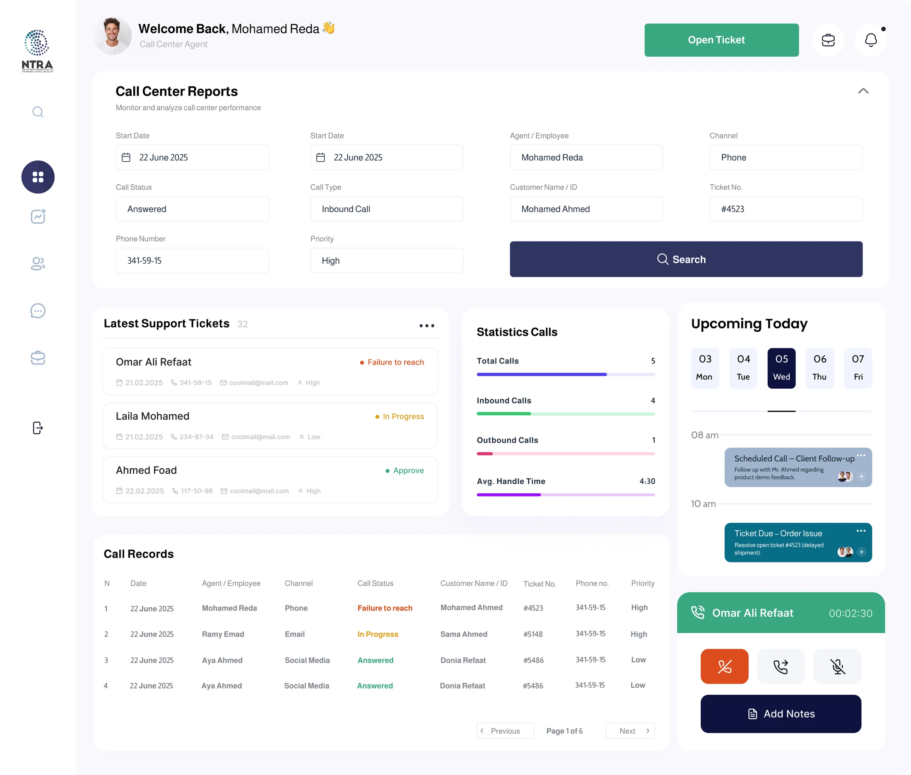

NTRA Call Center Portal
A workspace where the live call never leaves the screen, so agents can log, look up and resolve without losing the person on the line.
On a call
One desk for every part of a call.
The NTRA Call Center Portal is an internal workspace that supports call center agents in managing customer interactions and accessing the information they need during their daily operations.
The redesign focused on a more structured workspace, where agents can:
- Handle live calls
- Access customer information
- Open and manage requests
- Move between tasks efficiently
Judged on two things, at once.
In the existing workflow, those two goals lived on separate screens. Every hand-off between them cost time the agent didn’t have, while someone was still on the line.
How quickly they resolve the caller’s issue.
How accurately they log it.
Before: the live call, the ticket form and the customer’s history lived in three different places.After: one workspace. The call stays pinned while the agent logs and looks up on the same page.
Never lose sightof the call.
One workspace where an agent can monitor an active call, open or update a ticket, and review a customer’s record. Pick a goal to see where it lives on the screen.
Follow one call.
The agent’s home base
Everything that frames a shift, on one screen.
Read the queue at a glance.
The same few statuses appear on every screen: tickets, records and the detail panel. Each one pairs a colour with a dot and a word, so the meaning never depends on colour alone.
Primary
Live call
Urgent
Pending
Canvas
Fewer screens, one conversation.
Want to see more? There are three more case studies in the portfolio.